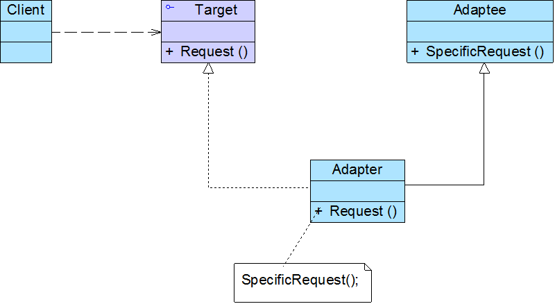
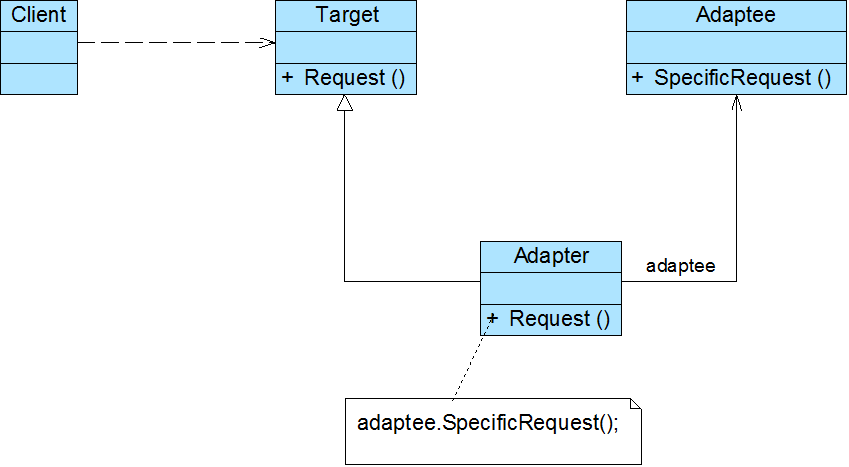

适配器模式：将一个类的接口转换成客户希望的另一个接口。适配器模式让那些接口不兼容的类可以一起工作。
Adapter Pattern: Convert the interface of a class into another interface clients expect. Adapter lets classes work together that couldn't otherwise because of incompatible interfaces.
2种适配器. 1) 类适配器. 2)对象适配器.
1) 类适配器.

2)对象适配器. <注意, 哥哥们. 注意关联的存在)
